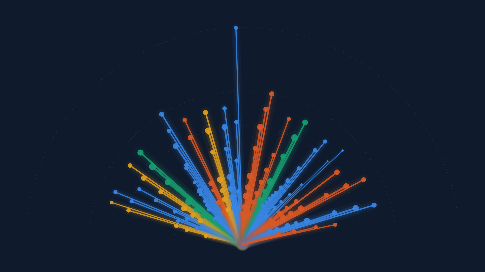
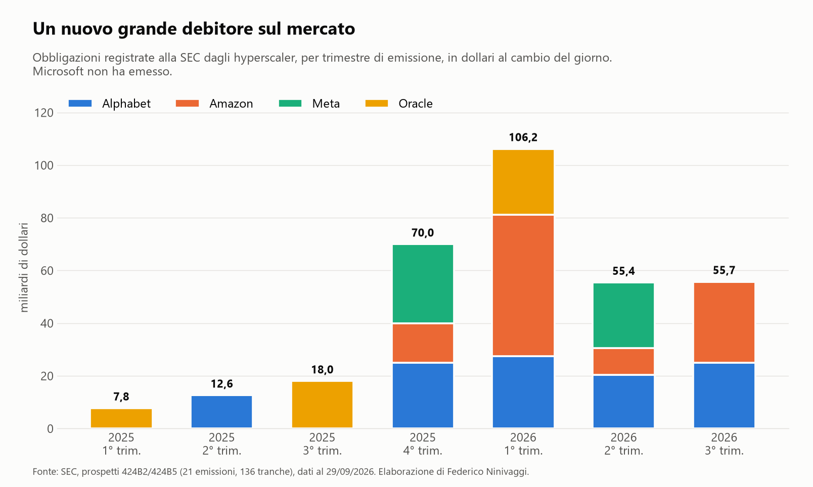
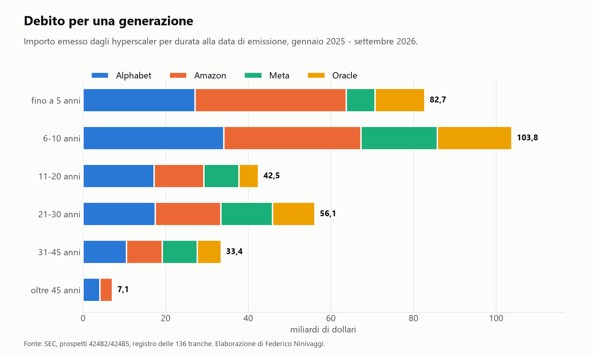
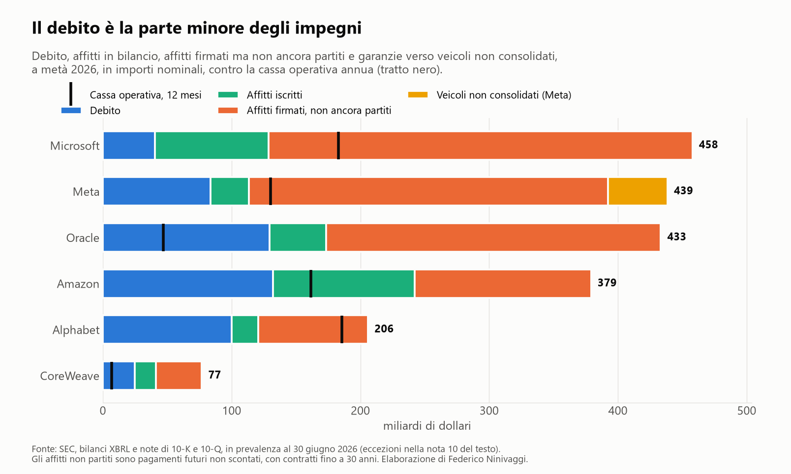
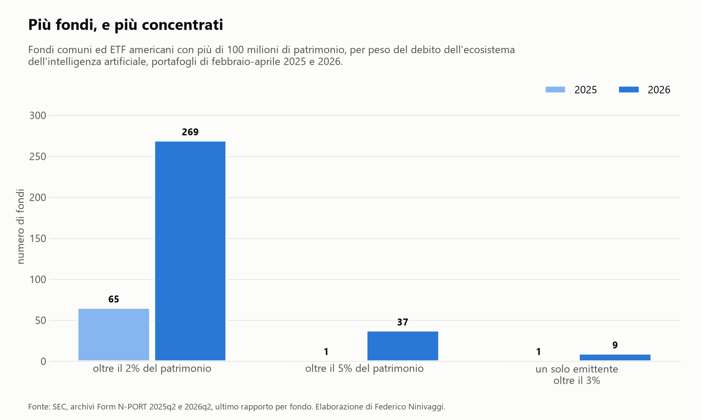

Il nuovo grande debitore dei mercati
Nº 03 · long read · 6 ott 2026
Il nuovo grande debitore dei mercati
In ventuno mesi Alphabet, Amazon, Meta e Oracle hanno collocato 325,7 miliardi di dollari di obbligazioni, con durate da titolo di Stato. Il debito però rappresenta la parte minore degli impegni: gli affitti di data center già firmati e non ancora iscritti in bilancio, sommati senza attualizzarli, valgono più del doppio del debito dei cinque grandi gruppi.
Intelligenza artificialeMercati e credito
↩ torna a Long read
In ventuno mesi Alphabet, Amazon, Meta e Oracle hanno collocato 325,7 miliardi di dollari di obbligazioni, con durate da titolo di Stato. Il debito però rappresenta la parte minore degli impegni: gli affitti di data center già firmati e non ancora iscritti in bilancio, sommati senza attualizzarli, valgono più del doppio del debito dei cinque grandi gruppi.
Fra marzo e giugno del 2026 Microsoft ha aggiunto 133 miliardi di dollari a una voce che non compare nel suo stato patrimoniale. La voce raccoglie i canoni, soprattutto per data center, che il gruppo si è impegnato a pagare in contratti già firmati ma non ancora cominciati: 196,6 miliardi di dollari alla fine di marzo, 329,1 miliardi di dollari alla fine di giugno. Nello stesso periodo Microsoft non ha registrato presso l’autorità di borsa americana una sola emissione obbligazionaria, come non ne registra dal gennaio 2025. Il caso di Microsoft è quello estremo di una tendenza che da quasi due anni trasforma il mercato del credito. I gruppi che costruiscono l’infrastruttura dell’intelligenza artificiale si impegnano a pagare somme enormi in due forme: le obbligazioni, che sono debito e compaiono in bilancio, e gli affitti già firmati, che lo stato patrimoniale non mostra e che compaiono solo nelle note. (1)
Nel settore questi gruppi si chiamano hyperscaler: gestiscono centri di calcolo su scala planetaria e ne vendono la capacità, e sono Amazon, Alphabet, Meta, Microsoft e, nella classificazione del Financial Times, Oracle. Il loro debito si misura sui documenti che le società devono depositare presso la Securities and Exchange Commission (SEC), l’autorità di vigilanza sui mercati americani, e sui portafogli che i fondi comuni rendono pubblici ogni trimestre.
Un nuovo debitore
Dal gennaio 2025 al settembre 2026 i quattro gruppi che si finanziano sul mercato obbligazionario hanno depositato 21 prospetti definitivi di obbligazioni, per 136 titoli e 325,7 miliardi di dollari. Alphabet ha collocato 110,5 miliardi di dollari, Amazon 109,5 miliardi, Meta 55,0 miliardi e Oracle 50,8 miliardi. Nei primi nove mesi del 2026 il totale collocato ha raggiunto 217,4 miliardi di dollari, 2,0 volte quello dell’intero 2025. (2)

Il debito non è più denominato soltanto in dollari. Quasi un quarto dell’importo emesso, il 23,2 per cento, è denominato in altre valute: 42,4 miliardi di dollari in euro, 16,3 miliardi in dollari canadesi, 13,2 miliardi in sterline e 3,6 miliardi in yen. Nel maggio 2026 Alphabet ha collocato 576,5 miliardi di yen in sette titoli, l’ultimo con scadenza nel 2066. La scelta di cinque valute suggerisce un emittente che cerca compratori su tutti i mercati. (3)
Le quantità restano piccole rispetto ai titoli di Stato. Fra gennaio e agosto 2026 le emissioni in dollari degli hyperscaler hanno pesato circa un decimo del debito aggiunto dal Tesoro americano, e il loro calendario non segue quello dei rendimenti dei titoli di Stato: il rialzo dei Treasury del 2026 ha cause soprattutto diverse, come ha mostrato un’analisi precedente. La novità va cercata nel mercato del credito alle imprese. (4)
Debito per una generazione
La durata media dei 136 titoli, ponderata per l’importo, è di 16,6 anni. Il 29,3% dell’importo emesso scade fra trent’anni o più, il 10,6% fra quarant’anni o più. Alphabet e Amazon hanno collocato titoli a cinquant’anni, e nel febbraio 2026 Alphabet ha emesso in sterline un titolo che scade nel 2126. Sui soli titoli a cedola fissa i quattro gruppi pagano ogni anno circa 15,9 miliardi di dollari di interessi. (5)

Il costo di quelle durate è cresciuto. Sul titolo a quarant’anni Meta pagava una cedola del 5,75% nell’ottobre 2025 e del 6,45 per cento nell’aprile 2026; Alphabet è passata dal 5,30% dell’aprile 2025 al 6,50% dell’agosto 2026. Il bilancio di Meta al 30 giugno 2026 mostra il peso delle scadenze lunghe: sulle obbligazioni in circolazione, pari a 84,00 miliardi di dollari, gli interessi ancora da pagare fino alla scadenza ammontano a 89,38 miliardi di dollari, più del capitale stesso. (6)
Il prezzo del rischio
Il costo di un’obbligazione societaria si misura sullo spread, cioè sul rendimento aggiuntivo rispetto al titolo di Stato americano di pari durata, espresso in punti base: 85 punti base corrispondono allo 0,85 per cento annuo. Le classi di rating dovrebbero ordinare gli spread: un emittente AA paga meno di uno A. Nell’aprile 2025 Alphabet, classificata AA+, collocava il titolo a dieci anni a 47 punti base sopra il Treasury; nell’agosto 2026 ha pagato 85 punti base, 38 punti base in più. Nelle stesse due date lo spread medio delle obbligazioni AA era fermo a 57 punti base, e quello delle obbligazioni A era calato da 86 a 65 punti base. Mentre il mercato chiedeva meno ai debitori di classe A, a un debitore classificato AA+ chiedeva di più: nell’agosto 2026 Alphabet ha collocato sopra la media della classe inferiore. (7)
Le grandi emissioni sembrano spostare anche il resto del mercato. Fra il giorno che precede la prezzatura delle 12 emissioni in dollari più rilevanti e il terzo giorno successivo, lo spread medio delle obbligazioni AA si allarga in media di 2,6 punti base, contro una variazione quasi nulla negli altri giorni dello stesso periodo. L’indice AA raccoglie però i titoli con rating AA, e Alphabet è classificata AA+: il suo allargamento può includere il nuovo prezzo dei titoli Alphabet già in circolazione. L’indice della classe superiore, AAA, che non comprende titoli classificati AA, si allarga di 2,8 punti base negli stessi eventi. L’allargamento dell’indice AA ricorre nell’83% degli eventi e riguarda allo stesso modo tutte le classi di rating. Con dodici eventi, molti dei quali cadono pochi giorni dopo la pubblicazione dei conti trimestrali, l’effetto dell’offerta non si separa del tutto da quello delle notizie sugli investimenti. (8)
Gli impegni non iscritti in bilancio
La leva di una società si misura di solito con il rapporto fra il debito e la cassa che l’attività produce. Per gli hyperscaler questa misura coglie una parte minoritaria degli impegni. I principi contabili americani obbligano a iscrivere in bilancio gli affitti in corso; gli affitti firmati ma non ancora cominciati restano invece nelle note, e in questa forma gli hyperscaler si assicurano i data center che altri costruiranno per loro. (9)
Alla metà del 2026 i cinque gruppi dichiarano 485,9 miliardi di dollari di debito finanziario e 292,6 miliardi di dollari di affitti iscritti in bilancio. Gli affitti firmati e non ancora cominciati ammontano a 1.090,5 miliardi di dollari, 2,2 volte il debito finanziario. Non costituiscono debito in senso stretto: sono pagamenti futuri, non attualizzati, previsti da contratti che durano fino a trent’anni, e alcuni contratti di Microsoft dipendono da condizioni ancora da verificare. Danno però l’ordine di grandezza di impegni fissi che in alcuni casi crescono più in fretta del debito: fra marzo e giugno 2026 la voce di Microsoft è aumentata più di quanto Meta abbia raccolto con tutte le obbligazioni emesse dal 2025, e la voce di Meta è cresciuta in sei mesi, dal dicembre 2025 al giugno 2026, da 103,77 a 278,99 miliardi di dollari. (10)

Meta ricorre anche a una terza forma. Nell’ottobre 2025 ha costituito con un fondo del gruppo Blue Owl una società comune per costruire un campus di data center in Louisiana; della società possiede il 20 per cento e non la consolida. Il socio ha finanziato la propria quota collocando privatamente 27,3 miliardi di dollari di obbligazioni garantite, che non compaiono nel bilancio di Meta. L’esposizione massima di Meta alla perdita, indicata nella nota di bilancio, è di 46,03 miliardi di dollari, il 55% del debito finanziario che iscrive. (11)
A fronte di questi impegni la cassa operativa dei cinque gruppi vale 707,3 miliardi di dollari negli ultimi dodici mesi, e gli investimenti in impianti assorbono l’82,9% di tale cassa. Amazon ha investito il 107% della propria cassa operativa, Oracle il 161%, ed entrambe hanno chiuso gli ultimi dodici mesi con una cassa libera negativa. Il profilo più teso è quello di Oracle: debito e affitti, iscritti o ancora da cominciare, valgono 9,2 anni della sua cassa operativa, anche se il gruppo dichiara 638 miliardi di dollari di contratti con i clienti già firmati e non ancora eseguiti. (12)
Chi compra il debito
I fondi comuni e gli ETF americani depositano ogni trimestre presso la SEC l’elenco completo delle posizioni. Nei portafogli di febbraio-aprile 2026 il debito dell’ecosistema dell’intelligenza artificiale, cioè quello degli hyperscaler e delle società che costruiscono o gestiscono capacità di calcolo per loro, valeva 80,2 miliardi di dollari, contro 30,8 miliardi di dollari un anno prima: 2,6 volte tanto. Oracle è il debitore più diffuso, presente in 1.190 fondi, che detengono il 21,0% del suo debito finanziario. (13)
Quattro famiglie di fondi, Vanguard, BlackRock, Capital Group e PIMCO, detengono il 60,1% del debito dell’ecosistema presente nei portafogli dei fondi americani. Le prime due gestiscono soprattutto fondi indice, che non selezionano i titoli: li acquistano in proporzione all’importo in circolazione. Più gli hyperscaler emettono, più il loro debito entra nei portafogli di chi ha scelto di replicare l’intero mercato obbligazionario, e chi emette troverebbe così un compratore che, per costruzione, non tratta sul prezzo. (14)
Anche la concentrazione è cresciuta. Nei portafogli del 2025 un solo fondo americano con più di cento milioni di dollari di patrimonio aveva oltre il 5 per cento dell’attivo in questo debito; nei portafogli del 2026 i fondi sopra quella soglia sono 37. I fondi oltre il 2% dell’attivo sono passati da 65 a 269 fondi. Le obbligazioni del veicolo di Meta si trovano per il 36% del loro valore in fondi americani, e solo il 19,0% di quel valore è detenuto da fondi che possiedono anche obbligazioni Meta. Chi detiene entrambe ha verso il gruppo un’esposizione più ampia di quella che legge alla voce «Meta». (15)

I laboratori a valle
Gli affitti firmati dagli hyperscaler si ripagano con i contratti di calcolo che altri firmano con loro, e fra questi clienti pesano due società non quotate, Anthropic e OpenAI, che non depositano bilanci presso la SEC. Gli effetti compaiono nei bilanci di chi le finanzia. Nel secondo trimestre del 2026 Amazon ha registrato 53,4 miliardi di dollari di proventi non operativi, «primarily from our investments in Anthropic», circa due terzi dell’utile ante imposte del trimestre. La sola rivalutazione delle azioni privilegiate di Anthropic, 50,5 miliardi di dollari, vale 1,8 volte l’utile operativo del trimestre. Dalla valutazione di questi laboratori dipende in buona parte la loro possibilità di raccogliere il denaro con cui pagare la capacità di calcolo, e quindi gli affitti su cui la costruzione dei data center si regge. (16)
Il confronto con le ferrovie
Un paragone ricorrente è con la costruzione delle ferrovie nell’Ottocento. Nel 1847, al culmine della Railway Mania britannica, gli investimenti ferroviari assorbirono il 7,3% del prodotto interno lordo britannico; i 745 miliardi di dollari di investimenti annunciati per il 2026 da Alphabet, Amazon, Meta e Microsoft valgono il 2,4% del prodotto interno lordo americano del 2025. Per il credito, la differenza che conta riguarda il finanziamento. Gli atti del Parlamento che autorizzavano le compagnie britanniche consentivano di norma prestiti fino a un terzo del capitale azionario, e quando la bolla scoppiò le perdite ricaddero sugli azionisti, mentre quasi nessuna linea fallì. Le ferrovie americane furono costruite soprattutto a debito, in un mercato obbligazionario societario composto allora in prevalenza di titoli di ferrovie, canali e miniere: nel triennio 1873-1875 i tassi annui d’insolvenza di quel mercato sommarono il 35,9 per cento del suo valore nominale. (17)
I due modelli oggi convivono. Per il solo debito finanziario, contenuto rispetto alla cassa operativa che producono, i grandi gruppi, Oracle esclusa, assomigliano alle compagnie britanniche; contando gli affitti già firmati, la somiglianza si attenua. Il modello americano riaffiora ai margini, nei veicoli che costruiscono i data center a debito e nelle società di calcolo, legati ai grandi gruppi da affitti di lungo periodo. Chi volesse misurare questi impegni potrebbe guardare, oltre alle emissioni, alla voce delle note di bilancio che raccoglie gli affitti non ancora cominciati, dove fra dicembre 2025 e giugno 2026 per Meta, e nel solo secondo trimestre del 2026 per Microsoft, gli impegni sono cresciuti più in fretta del debito.
Note e fonti
Elaborazioni su prospetti, bilanci e portafogli dei fondi depositati presso la Securities and Exchange Commission, e su dati della Federal Reserve. Dati al 29 settembre 2026. Codice e verifiche dell’analisi sono disponibili su richiesta.
Microsoft, 10-Q al 31 marzo 2026 e 10-K al 30 giugno 2026, nota sugli affitti: «additional leases, primarily for datacenters, that had not yet commenced». Nessun prospetto definitivo di obbligazioni (424B2 o 424B5) depositato da Microsoft dal 1° gennaio 2025.
SEC, prospetti definitivi 424B2 e 424B5 e schede dei termini, 82 documenti scaricati il 29 settembre 2026; importi in dollari al cambio del giorno d’emissione. In tutte le 21 emissioni la somma sottoscritta dalle banche coincide con il totale dichiarato. Il registro è un conteggio per difetto: non comprende le emissioni collocate fuori dal perimetro della SEC né i veicoli dei data center.
Registro delle tranche dai prospetti SEC; valori in dollari al cambio del giorno. Totale denominato in dollari: 250,2 miliardi di dollari.
Gennaio-agosto 2026: 157 miliardi di dollari emessi in dollari dagli hyperscaler (212 miliardi in tutte le valute), pari al 10% dell’aumento del debito negoziabile del Tesoro (Monthly Statement of the Public Debt). F. Ninivaggi, «Il costo della guerra arriva sui titoli di Stato», LinkedIn, ottobre 2026.
Durata alla data d’emissione, ponderata per l’importo. Titolo Alphabet in sterline con cedola del 6,125% e scadenza 2126, prospetto 424B2 depositato il 12 febbraio 2026.
Cedole dai prospetti; date di prezzatura (30 ottobre 2025 e 30 aprile 2026). Meta, 10-Q al 30 giugno 2026: «$84.00 billion aggregate principal amount of Notes outstanding», interessi futuri 4,40 miliardi di dollari entro dodici mesi e 84,98 miliardi oltre.
Spread dichiarati nelle schede dei termini (FWP) di Alphabet con data di contrattazione 28 aprile 2025 e 6 agosto 2026 («Spread to Benchmark Treasury»; la seconda scheda è depositata il 7 agosto), con i rating dichiarati nelle stesse schede. Indici ICE BofA delle obbligazioni americane AA e A (FRED), stesso giorno; i valori del 6 e del 7 agosto 2026 coincidono. Sul titolo a quarant’anni lo spread di Alphabet è aumentato di 60 punti base. Indice A: 86 punti base il 28 aprile 2025, 65 punti base il 6 agosto 2026. Lo spread al collocamento contiene il premio necessario a collocare un’offerta grande in un solo giorno, che l’indice dei titoli già in circolazione non ha: il sorpasso sulla media della classe A va letto con questa cautela, mentre le variazioni nel tempo sono confrontabili.
Studio d’evento su 12 emissioni in dollari; variazione media negli altri giorni dello stesso periodo -0,2 punti base; l’allargamento supera il 99,9 per cento delle medie ottenute estraendo a caso dodici giornate senza emissioni (10.000 estrazioni). Togliendo le finestre a cavallo del ribilanciamento di fine mese degli indici: +2,9 punti base, percentile 99,4. Indice AAA: +2,8 punti base, con un aumento nel 92 per cento degli eventi. L’indice AA comprende, secondo FRED, «all securities with a given investment grade rating AA»; la presenza dei titoli di Alphabet è dedotta dal rating AA+ delle schede dei termini (nota 7), non verificata sulla composizione dell’indice.
I bilanci distinguono le «lease liabilities» iscritte dalle «leases that have not yet commenced», riportate in nota.
SEC, dati XBRL dei bilanci e testo delle note di 10-K e 10-Q al 30 giugno 2026, con alcune eccezioni: per Oracle debito e affitti non ancora cominciati al 31 maggio 2026, affitti iscritti al 31 agosto 2026; per Meta affitti finanziari al 31 dicembre 2025; per CoreWeave, presente solo nella figura, debito al 31 marzo 2026. Affitti non ancora cominciati: Microsoft 329,1 miliardi di dollari, Meta 279,0 miliardi, Oracle 260,0 miliardi, Amazon 137,2 miliardi, Alphabet 85,2 miliardi. Microsoft: «with some arrangements subject to certain contractual conditions being met». Restano fuori dal conto gli impegni d’acquisto, che comprendono voci diverse dagli affitti, come i contratti per l’energia e le licenze.
Meta, 10-K 2025, nota 5, e 10-Q al 30 giugno 2026: «our maximum exposure to loss related to the Venture was $46.03 billion». Blue Owl Real Estate Net Lease Trust, 10-Q al 30 settembre 2025, nota 18: «Beignet Investor issued $27,293,849 in senior secured notes with an interest rate of 6.581% and a maturity date of May 30, 2049» (importi in migliaia di dollari). Negli archivi N-PORT 2026q2 il titolo compare come «BEIGNET INVESTOR LLC 144A 6.581000% 05/30/2049» (CUSIP 076912AA2): la regola 144A riserva il collocamento agli investitori istituzionali, fuori dai prospetti registrati.
SEC, dati XBRL, dodici mesi al 30 giugno 2026 (Oracle al 31 agosto 2026). Cassa libera calcolata come cassa operativa meno investimenti lordi in impianti: Amazon -11,6 miliardi di dollari, Oracle -28,7 miliardi. Amazon sottrae invece gli investimenti al netto di vendite e incentivi e comunica un dato diverso: «Free cash flow decreased to an outflow of $7.6 billion for the trailing twelve months» (8-K del 30 luglio 2026, allegato 99.1). Oracle, 10-K al 31 maggio 2026: «Remaining performance obligations were $638 billion and $138 billion as of May 31, 2026 and 2025, respectively». Gli «anni di cassa» sono una misura di scala, non un piano di rimborso.
SEC, archivi Form N-PORT 2025q2 e 2026q2, ultimo rapporto per fondo, portafogli in prevalenza di febbraio-marzo. Ecosistema: hyperscaler, veicolo di Meta, CoreWeave e altre società di calcolo, cartolarizzazioni di data center, SoftBank, Nvidia. Debito di Oracle al 31 maggio 2026. N-PORT descrive i soli fondi americani registrati: assicurazioni, fondi pensione, banche e investitori esteri restano fuori.
N-PORT 2026q2, aggregazione per famiglia di fondi. Il meccanismo dei fondi indice è un’inferenza sul loro funzionamento, non un dato misurato.
Fondi con più di 100 milioni di dollari di patrimonio. Obbligazioni Beignet Investor nei fondi: 9,7 miliardi di dollari in 317 fondi, di cui 6,9 miliardi presso PIMCO.
Amazon, 8-K del 30 luglio 2026, allegato 99.1: «non-operating pre-tax other income of $53.4 billion, primarily from our investments in Anthropic»; 10-Q al 30 giugno 2026: «upward adjustments of approximately $50.5 billion in Q2 2026», «primarily from our nonvoting preferred stock in Anthropic». Utile operativo del trimestre 27,5 miliardi di dollari, utile ante imposte 80,9 miliardi.
A. Odlyzko, «Collective hallucinations and inefficient markets: The British Railway Mania of the 1840s», University of Minnesota, 2010, p. 34 (7,3 per cento del PIL nel 1847), nota 94 (limite di un terzo, in parafrasi: «The usual provisions allowed railways to raise up to one third of their equity capital in loans») e p. 25 («hardly any of the lines went bankrupt»). K. Giesecke, F. A. Longstaff, S. Schaefer e I. Strebulaev, «Corporate bond default risk: A 150-year perspective», NBER Working Paper 15848, 2010, p. 8 («Railroads were built mainly with borrowed money») e tab. 3; p. 1: «the corporate bond market of the 1860s was composed primarily of railroad, canal, and mining issues». Investimenti annunciati: Financial Times, 28 settembre 2026; PIL americano 2025 dal BEA (FRED) nella versione scaricata per l’analisi; la serie disponibile il 6 ottobre 2026 lo alza dello 0,3% e lascia il rapporto al 2,4%.
Uscito su LinkedIn il 6 ottobre 2026: l’articolo originale.
Federico Ninivaggi · 6 ottobre 2026